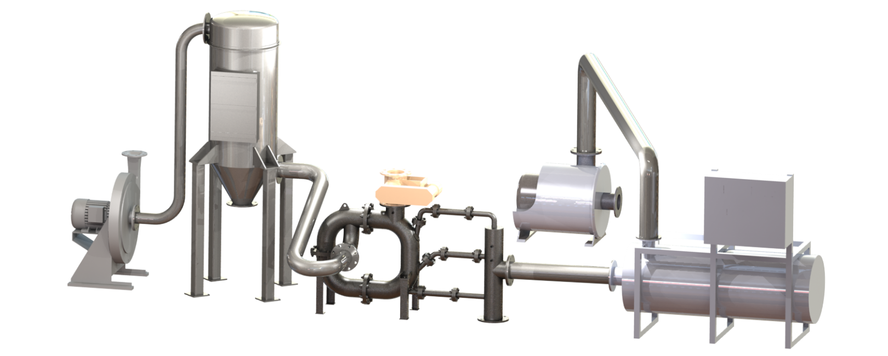

Outstanding Efficiency and Versatility in Fine Grinding (0.5 – 45 Microns) and Classification
The JET-O-MIZER jet mill has been developed with many distinct design features to consume less power, provide a greater range of throughput (1 to 12,000 lb/hr) and ensure exceptional finished product quality. Thorough application engineering allows determination of the ideal operational conditions for your process. Specific raw material characteristics and production requirements are integrated into a complete JET-O-MIZER system.
High-Efficiency Chamber Design
The JET-O-MIZER grinding chamber features an inverted trapezoidal design, which forces the circulating particles to concentrate at the nozzles. This unique design improves grinding efficiency and reduces wear on chamber walls.
Adjustable Classification Zone
The JET-O-MIZER jet mill employs an externally adjustable configuration. This feature controls the velocity gradient to isolate the classification process from the grinding chamber. This patented feature allows efficient control of particle size distribution for multiple products or specifications.
No Attritional Heat
The cooling effect of the grinding fluid completely offsets the slight heat generated during grinding. The JET-O-MIZER jet milling machine is routinely used to grind products with critical heat limitations.
Combined Operations
In the JET-O-MIZER system, grinding may be combined with other physical and chemical operations. This saves time, reduces energy and minimizes product handling. While grinding, the JET-O-MIZER can:
- blend and mix ingredients
- coat product with waxes, oils and dyes
- promote chemical reactions (such as oxidization and calcination)
- inhibit chemical reactions
- free entrapped solvents
Replaceable Protective Liners
Special alloy, polymer or ceramic liners minimize wear or build-up in strategic areas of the jet mill. This simplifies operation, extends the life of many components and prevents downtime.
Adjustable Classification Zone
Production size JET-O-MIZER jet mill employs an externally adjustable configuration. This feature controls the velocity gradient to isolate the classification process from the grinding chamber. This patented feature allows efficient control of particle size distribution for multiple products or specifications.
Reliable Construction
The JET-O-MIZER jet milling machine is constructed entirely in the USA of only the highest quality components. The low-maintenance design has no moving parts and can be opened quickly and easily for inspection or cleaning. All parts are made in the USA which guarantees rapid delivery of spare items. Comprehensive engineering and durable construction enable our system to operate continuously 24 hours a day, 365 days a year.
Engineering Support and Service
JET-O-MIZER testing is done at our facility in Pennsylvania where detailed process data can be obtained for your application. Fluid Energy engineers and quality service technicians are immediately available to provide technical assistance and to guarantee that the JET-O-MIZER System performs to your complete satisfaction.
Rental Systems
Most of Fluid Energy’s advanced jet mill systems are available on a rental basis to fulfill your immediate processing requirements.
Custom Processing
Fluid Energy maintains a facility for fine / ultra fine grinding of your material on a contractual basis. Other services include blending, drying and packaging. Our fully equipped QA laboratories are available for moisture, particle size and custom analyses of your products.
Air, steam or gas is introduced into the JET-O-MIZER through specially designed nozzles to create a sonic or supersonic grinding stream. Solid particles of raw feed are injected into this violent, turbulent stream. The high-velocity collisions that result provide thorough and effective pulverization of the feed into smaller particles. The particle stream leaving the reduction chamber flows to the classification zone. As the stream enters the static classifier, the direction of flow is reversed. Properly sized product is entrapped by the viscous drag of the exiting flow and conveyed to collection equipment. Larger particles are recycled to the reduction chamber for further grinding.

Typical Operating Parameters
| Mill Series |
Production Capacity(lbs/hr) |
Production Capacity(kgs/hr) |
SCFM Comp Air@70° F & 100 PSIG |
Steam @70° F & 200 PSIG |
| 000101 |
0.1 - 20.5 - 20 |
0.05 - 1.00.25 - 9.0 |
4.010 - 30 |
N/A60 - 120 |
| 02020304 |
1 - 10050 - 750 |
0.5 - 4525 - 340 |
50 - 120100 - 500 |
200 - 500400 - 1,000 |
| 04050506 |
100 - 1,500200 - 2,500 |
45 - 68090 - 1,135 |
400 - 800450 - 1,200 |
1,000 - 2,0001,500 - 2,500 |
| 06080808 |
400 - 3,500500 - 9,000 |
180 - 1,590225 - 4,100 |
750 - 1,5001,000 - 2,000 |
3,000 - 5,0004,000 - 6,500 |
| 11121314 |
800 - 12,0001,200 - 18,000 |
225 - 4,535365 - 5,445 |
2,000 - 4,0003,000 - 6,000 |
6,000 - 15,0008,000 - 22,000 |
Jet-o-Mizer Applications
The Jet-o-Mizer is ideal for a wide range of ultra-fine to fine powder grinding and classification applications including:
- Hard, Abrasive Materials: Ceramics, Mineral Ores
- Heat Sensitive Materials: Pigments, Waxes, Resins
- Sanitary, Sterile Applications: Pharmaceuticals
- Agricultural Materials: Fungicides, Herbicides, Pesticides
- Volatile Materials: Propellants, Explosives, Oxidizers
- Synthetic Materials: Polymers, Plastics, Precipitates